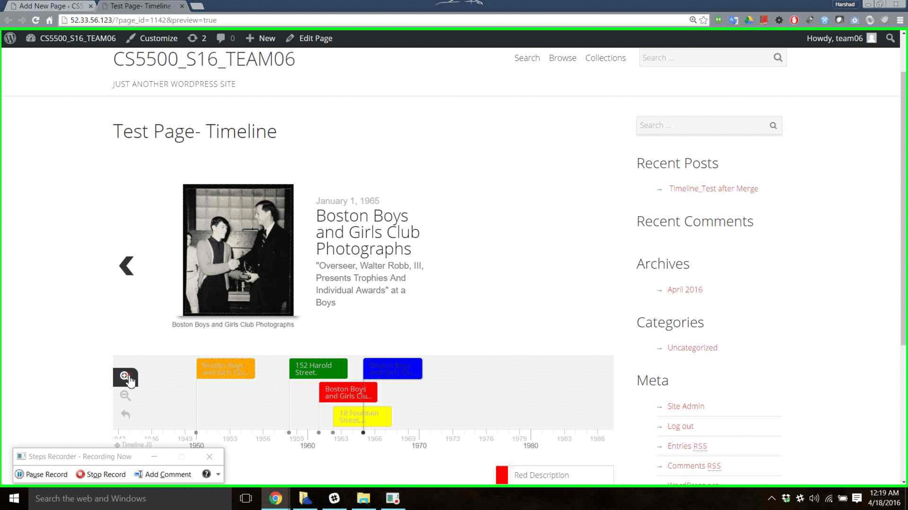

Software Engineer | Horse Lover | Dancer | Traveller
Academics
About Me:
I'm a software engineer and candidate for M.S. in Computer Science at Northeastern University, Boston. My academic interests include Networking,Virtualization, Information Retrieval, Big Data and Web Development
I love to explore latest technologies and work on products that impact the world. I'm addicted to problem solving and always look for an opportunity to learn something interesting. In my free time, I travel to learn about cultures and meet new people.

Northeastern University
Computer Science
Sept 2014 - Dec 2016

Pune Institute Of Computer Technology
Information Technology
May 2008 - Apr 2011
Professional Experience
Recent projects

Created WordPress plugin and used TimeLineJs and LeaftLet JS.
Enabled research groups at Northeastrn Research Group to use the tool effectively
Helped view artifacts across a easy TimeLine and locate the content origin using Maps.

CDN And Raw Sockets
Built building blocks of Content Delivery Network and Raw Sockets used python to implemented using TCP/IP, HTTP knowledge.
Connect with me:
Github LinkedIn Twitter